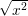

| Up | Next | Prev | PrevTail | Tail |
REDUCE knows that the following represent mathematical functions that can take arbitrary scalar expressions as their argument(s):
where LOG is the natural logarithm (and equivalent to LN), and LOGB has two arguments of which the second is the logarithmic base.
The derivatives of all these functions are also known to the system.
REDUCE knows various elementary identities and properties of these functions. For example:
Beside these identities, there are a lot of simplifications for elementary functions defined in the REDUCE system as rulelists. In order to view these, the SHOWRULES operator can be used, e.g.
For further simplification, especially of expressions involving trigonometric functions, see the TRIGSIMP package (chapter 16.71) documentation.
Functions not listed above may be defined in the special functions package SPECFN.
The user can add further rules for the reduction of expressions involving these operators by using the LET command.
In many cases it is desirable to expand product arguments of logarithms, or collect a sum of logarithms into a single logarithm. Since these are inverse operations, it is not possible to provide rules for doing both at the same time and preserve the REDUCE concept of idempotent evaluation. As an alternative, REDUCE provides two switches EXPANDLOGS and COMBINELOGS to carry out these operations. Both are off by default, and are subject to the value of the switch PRECISE. This switch is on by default and prevents modifications that may be false in a complex domain. Thus to expand LOG(3*Y) into a sum of logs, one can say
whereas to expand LOG(X*Y) into a sum of logs, one needs to say
To combine this sum into a single log:
These switches affect the logarithmic functions LOG10 (base 10) and LOGB (arbitrary base) as well.
At the present time, it is possible to have both switches on at once, which could lead to infinite recursion. However, an expression is switched from one form to the other in this case. Users should not rely on this behavior, since it may change in the next release.
The current version of REDUCE does a poor job of simplifying surds. In particular, expressions involving the product of variables raised to non-integer powers do not usually have their powers combined internally, even though they are printed as if those powers were combined. For example, the expression
will print as
but will have an internal form containing the two exponentiated terms. If you now subtract sqrt(x) from this expression, you will not get zero. Instead, the confusing form
will result. To combine such exponentiated terms, the switch COMBINEEXPT should be turned on.
The square root function can be input using the name SQRT, or the power operation ^(1/2). On output, unsimplified square roots are normally represented by the operator SQRT rather than a fractional power. With the default system switch settings, the argument of a square root is first simplified, and any divisors of the expression that are perfect squares taken outside the square root argument. The remaining expression is left under the square root. Thus the expression
becomes
Note that such simplifications can cause trouble if A is eventually given a value that is a negative number. If it is important that the positive property of the square root and higher even roots always be preserved, the switch PRECISE should be set on (the default value). This causes any non-numerical factors taken out of surds to be represented by their absolute value form. With PRECISE on then, the above example would become
However, this is incorrect in the complex domain, where the  is not identical to |x|. To avoid the above simplification, the switch PRECISE_COMPLEX should be set on (default is off). For example:
yields the output
The statement that REDUCE knows very little about these functions applies only in the mathematically exact off rounded mode. If ROUNDED is on, any of the functions
when given a numerical argument has its value calculated to the current degree of floating point precision. In addition, real (non-integer valued) powers of numbers will also be evaluated.
If the COMPLEX switch is turned on in addition to ROUNDED, these functions will also calculate a real or complex result, again to the current degree of floating point precision, if given complex arguments. For example, with on rounded,complex;
| Up | Next | Prev | PrevTail | Front |